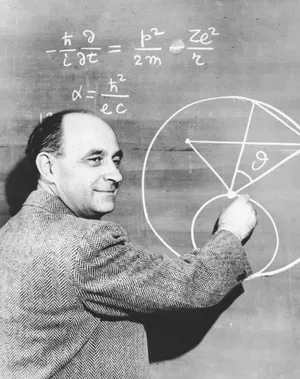
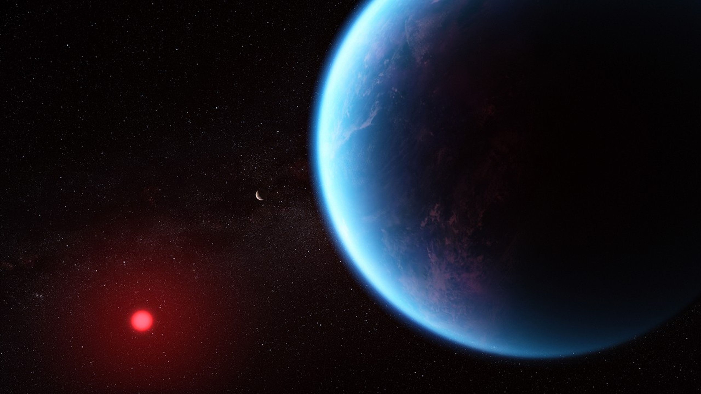

In 1950 Italian physicist and father of the atomic bomb, Enrico Fermi, asked several of his colleagues at the top-secret research center, Los Alamos, NM, a strange question: “But where is everybody?” According to one colleague, Edward Teller, he was met with general laughter followed by a profound discussion of the issue he was posing.

The problem: If, in a few thousand years, humans on Earth had developed technology advanced enough to at least transmit messages across vast space in the galaxy; there exist thousands of planets within our galaxy that have the proper conditions for intelligent life; and thousands of these same planets are millions of years older than Earth - logic would dictate that by now one of these species should have developed the capacity to contact or even visit Earth. In fact, Fermi notes, they should have been able to do so many times over. This might seem far-fetched, but the more we learn about our galaxy, the Milky Way, and the star systems inside it, the more many of us have come to wonder: where is everybody?
It’s no coincidence that Los Alamos was the birthplace of a scientific treatment of the question of extraterrestrial life. The birthplace of rocketry and the atomic bomb, New Mexico had recently burst into the mainstream via the 1947 Roswell Incident. Since then, the study of Unidentified Flying Objects (UFOs) and extraterrestrial life has been largely thought of as the fixation of “crackpots,” filler for tabloids like the National Enquirer, or the sweaty obsession of conspiracy minded online communities. However, Fermi and a number of eminent successors such as Carl Sagan continued to treat this issue with seriousness.
More recently, the search for extraterrestrial life has moved away from a hunt for “little green men” and the annals of science fiction to become a considered search for the origin and conditions for sustaining and developing life. In 1963 Carl Sagan published findings that show how exposure to ultraviolet light produces in single-celled organisms a substance called ATP, a key source of energy and a precursor to DNA that likely permitted life to develop out of the primordial oceans of Earth. His findings revealed that it was possible, in fact, probably, for other planets with similar biological and atmospheric conditions to develop complex life. Since this discovery, these conditions have been observed in numerous locations throughout the Milky Way.

An example would be exoplanet K2-18b, roughly 124 light years from Earth. Observations taken from the James Webb Space Telescope have proven that this panet enjoys roughly the same amount of light from its nearby star as our Earth recieves from the sun. On top of this, the presence of water vapor, carbon dioxide, and methane in its atmosphere has given rise to the theory that it may be a habitable "goldilocks" planet complete with ocean ecosystems, albeit one with a more hydrogen-rich atmosphere. In 2025, Prof. Nikku Madhusudhan and a team of scientists at Cambridge University reported that the atmosphere of K2-18b contained molecules only thought to arise primarily from the presence of life. These observations, facilitated by developing technologies such as radio spectroscopy and deep-space photography, are only just starting to give us a better glimpse of the billions of stars that blanket the night sky.